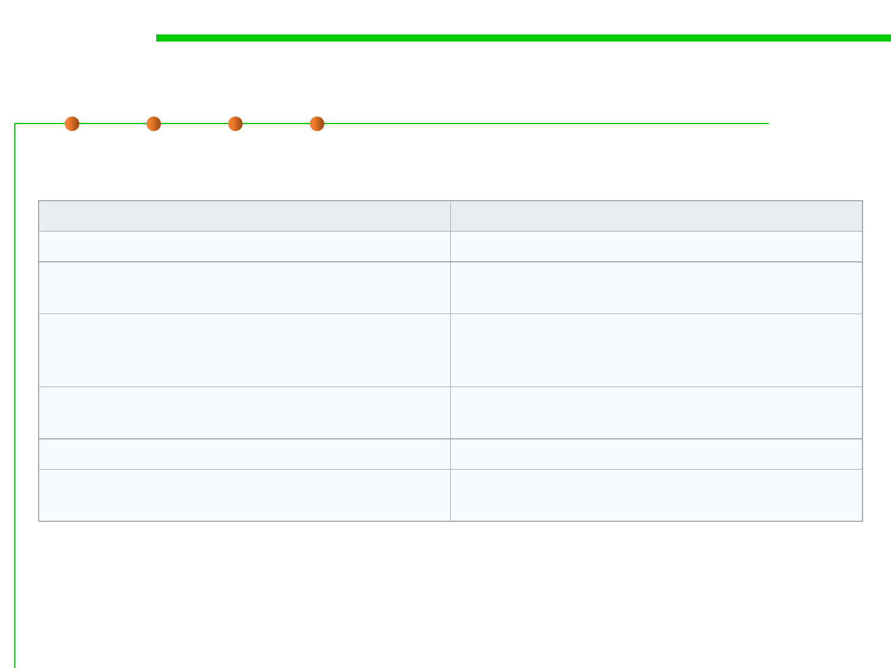

1.1 Multi-Dimensional Views of Software Construction
Execution tracing and event logging
Event logging
Consumed primarily by system administrators
Logs "high level" information (e.g. failed
installation of a program)
Must not be too "noisy" (contain many duplicate
events or information not helpful to its intended
audience)
A standards-based output format is often
desirable, sometimes even required
Event log messages are often localized
Addition of new types of events, as well as new
event messages, need not be agile
Execution tracing
Consumed primarily by developers
Logs "low level" information (e.g. a
thrown exception)
Can be noisy
Few limitations on output format
Localization is rarely a concern
Addition of new tracing messages must be agile